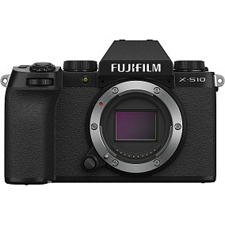
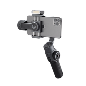
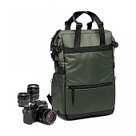
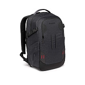
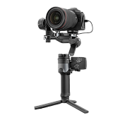

101 990 руб
Камера получила XTrans CMOS 4 с разрешением 26,1Мп, высокоскоростной процессор
обработки изображений X-Processor 4 и встроенный механизм стабилизации изображений (IBIS).
Вес и габариты встроенного механизма стабилизации изображения (IBIS) приблизительно на 30 %
меньше своего аналога из предыдущей модели.
При этом несмотря на наличие системы IBIS вес камеры составляет 450 грамм. Камера X-S10
обеспечивает 5-осевую стабилизацию изображения с эффективностью до 6 стопов.

21 990 руб.
21 990 руб.
Компания Zhiyun представляет профессиональный стабилизатор для смартфонов,
продолжающий успех серии SMOOTH, которая получила признание у видеографов по всему миру. Zhiyun
Smooth 5 отличается высокой грузоподъемностью и способен работать с тяжелыми смартфонами, на
которые установлены различные аксессуары (например, конверсионные насадки или небольшие
микрофоны), а также обладает возможностью подключения светодиодных источников света на магнитном
креплении.
Размеры меньше, грузоподъемность выше
Обновленные моторы и алгоритмы их поведения обеспечивают комфортную работу стабилизатора с
тяжелыми смартфонами с установленными на них аксессуарами.

Сумка универсальная Manfrotto Street Convertible Tote Bag
13 190 руб.
13 190 руб.
Сумка - трансформер Manfrotto Street - это универсальное решение для
хранения и переноски камеры, ноутбука и личных вещей, которое при необходимости легко
превращается в рюкзак. С легкостью вытяните два скрытых плечевых ремня в специальном заднем
кармане и прикрепите их к прочным застежкам. Плечевые ремни имеют мягкую подкладку и
регулируются для обеспечения комфорта.
Сумка имеет просторный доступ в верхнее отделение для организации личных вещей. Мягкий
вкладыш для 14 –дюймового ноутбука, расположенный внутри основного отделения. Быстрый доступ
к технике обеспечен в нижней части сумки. Это отделение вмещает беззеркальную камеру с
объективом и 1-2 дополнительных средних объектива или комплект для видеоблога.

21 990 руб.
21 990 руб.
Рюкзак Manfrotto PRO Light Backloader M разработан для обеспечения высокого
уровня безопасности оборудования профессионального фотографа или видеографа.
В рюкзаках PRO Light применена новая система защиты M-Guard ™, которая была разработана и
протестирована в лабораторных условиях, чтобы гарантировать высочайший уровень защиты и
поглощения ударов в тех областях контакта, где это особенно важно. Разделители M-Guard™
изготовлены из вспененного этилвинилацетата высокой плотности (EVA), который обеспечивает
исключительно высокий уровень поглощения ударов и при этом отличается компактностью. А
возможность перестановки перегородок поможет оптимально использовать внутреннее пространство.
Кроме того, использование в основе рюкзака вспененного материала SAS-TEC с эффектом памяти и
стойкостью к ударам обеспечивает дополнительные амортизирующие свойства. Для большей
беззаботности предусмотрен замок стандарта TSA.

56449 руб.
56449 руб.
Cтабилизатор с малым временем отклика, совершенно новым сенсорным экраном и
умными алгоритмами работы. Стабилизатор WEEBILL 2 облегчает для пользователей съемку
видеофильмов благодаря своей классической конструкции, мощному процессору Infineon, улучшенным
алгоритмам работы и новому подходу к передаче изображения.
О магазине
«Лигафото» — специализированный магазин фототехники, видеотехники для любителей и профессионалов. С 2008 года мы предлагаем широкий и актуальный ассортимент разнообразного оборудования: фотокамеры, объективы, вспышки, оснащение для студийных и выездных съемок, сумки, рюкзаки и чемоданы для техники, и весь спектр оригинальных и сторонних аксессуаров, необходимых фотографу и видеографу.
В нашем магазине Вы можете приобрести сертифицированный, официальный товар с гарантией производителя с доставкой по Москве или в любой регион России. Мы принимаем наличные и безналичные платежи и основные виды банковских карт. У наших менеджеров вы можете получить подробную консультацию по подбору оборудования. Мы продаем то, что действительно нужно нашим покупателям. В «Лигафото» предлагаются программы беспроцентной рассрочки на ряд товаров, трейд-ин – обмена старой техники на новую с доплатой, бесплатного тестирования новинок фотоиндустрии. Мы постарались собрать в нашем магазине все самое нужно и полезное для фотографов и видеографов.
Новости
24 мая 2022 Canon EOS R7 - новый флагман APS-C с байонетом RF! Сегодня, 24 мая 2022 компания Canon представила новую беззеркальную камеру EOS R7 с матрицей APS-C и байонетом RF. До официального анонса в сети попадались спецификации разной степени достоверности, но теперь о них известно официально. 15 июня 2022 Мощный светодиодный осветитель FIVERAY FR100C от компании Zhiyun Компания Zhiyun является одной из ведущих в производстве различных аксессуаров для фото- и видеосъемки. Сегодня Zhiyun представляет первый аксессуар для освещения — мощный светодиодный источник света FIVERAY FR100C собственной разработки. 15 июня 2022 Zhiyun представляет новый стабилизатор WEEBILL 3 для фото- и видеокамер Представленная новинка воплощает в себе новый дизайн удержания SLING 2.0, обновленную эргономику, встроенный микрофон и источник света, а также способна обеспечить работу в течение целого съемочного дня. 8 июня 2022 Новый универсальный и функциональный стабилизатор для смартфонов от Zhiyun! Компания Zhiyun представила новый универсальный и функциональный стабилизатор для смартфонов SMOOTH-Q4, продолжающий успех серии SMOOTH-Q, которая получила признание у видеографов по всему миру.